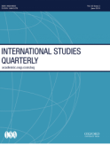
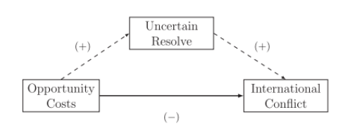
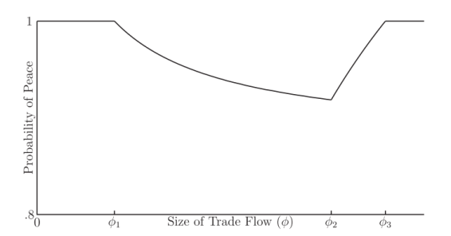

收录于合集

作品简介
【作者】 威廉·史宾拉（William Spaniel），匹兹堡大学政治学系助理教授，研究重点是国际冲突、核武器和恐怖主义；艾丽斯·马伦（Iris Malone），斯坦福大学政治学系博士生，其研究着重考察非国家行为体在国内和国际政治交汇点中的作用。
【编译】 房宇馨
【校对】 金琳
【审核】 徐垚晟
【排版】 梁鑫昱
【来源】 William Spaniel, Iris Malone, The Uncertainty Trade-off: Reexamining Opportunity Costs and War. International Studies Quarterly, Volume 63, Issue 4, December 2019, Pages 1025–1034, https://doi.org/10.1093/isq/sqz050.
期刊简介

《国际研究季刊》（ International Studies Quarterly ，ISQ）是国际研究协会的旗舰期刊，致力于发表国际研究中与理论性、实证性、规范性主题相关的领先学术成果。2019年该期刊影响因子为2.172。
不确定性权衡 ：重新检视机会成本与战争
The Uncertainty Trade-off: Reexamining Opportunity Costs and War
内容提要
关于经济相互依存和国际冲突的传统观点认为，机会成本的增加会使战争爆发概率降低。但是现实问题是，应该如何解释某些战争在机会成本上升的情况下爆发。作者构建出一个模型，用以展示在出战决心未定之时，机会成本与战争发生概率之间的非单调性关系。在作战一方对其对手作战决心不确定之时，如果增加其对手的机会成本便会产生二阶效应，即便对手本愿维持和平，但也加剧了彼此间的信息不对称。作者通过对1949年至2007年间中印关系的实证研究，推导出了使战争更为频繁的条件，并解释了模型的含义。经济相互依存如何对战争动机进行调节，传统学者认为贸易等工具与战争发生的概率成负相关，本文的研究结论对上述观点发起了挑战。
文章导读
机会成本与战争之间有何关系？大多数政治学家援引“机会成本机制”来解释为何商业、贸易关系及其他经济交易会降低冲突的概率。随着相互依存的潜在收益增加，机会成本也随之上升。使各方利益得以实现互惠的解决方案增多，战争爆发的概率便相应地降低（Fearon
1995；Oneal and Russett 2001；Polachek and Xiang
2010）。总之，机会成本理论成为了迄今最为流行的战争研究理论。
然而，并非所有学者都认为机会成本是解释冲突得以避免的全部原因，历史上就曾出现与惯常经验相悖的情况。有时，尽管各方之间的经济相互依存度增加，但冲突还是会出现，这引发了人们对机会成本何时以及是否会减少冲突的关注。在本文中，作者通过构建一个可以调和这种困惑的模型，从而证实机会成本机制的支持者和怀疑者都是正确的。贸易等经济工具的发展与战争发生的概率两者成反比，因为即便增加战争的成本，机会成本也会产生间接的二阶效应（注：社会科学中的“二阶效应”是指，在一个复杂系统中，每当改变其中的某个部分，都会产生连锁反应，反应的结果往往是不可预料的，甚至和预期相反），加剧一国决心的不确定性，从而降低战争的概率。那么机会成本的增加对战争的抑制与促进作用中哪一种效果更为明显？作者证明，在均衡状态下，后者也可以占主导，即尽管机会成本增加，但战争的概率却增加了。一国在对对手的战斗决心不确定时会采取两种策略。首先，若对方战斗决心坚定，该国可以主动提供大量和谈资金，使战事可解，从而避免战争成本。或者，该国亦可选择一个成本较低的方法来甄别对手的战斗决心，主动进行和谈，那么对方如若接受此方案便为战斗决心不坚定，如若拒绝便为战斗决心坚定。无论对手战斗决心是否坚定，当两种情况下的战争成本所差无几时，宣战国将会降低对对手战斗决心进行甄别的动力。因为此时，即便进行甄别，该国也会涉险宣战。然而，随着战争成本的增加，对不同类型对手的相对评估出现了差异。因此，对手有可能提出更具侵略性的要求。随着拥有不同作战决心的对手之间相对战争成本的差异加大，对于宣战国来说，不断提升对敌方进行甄别的动力比增加战争机会成本更为重要。这在本文所构建的模型中得到了验证。该模型在不确定性效应支配机会成本效应时进行了比较静态分析（Comparative
Statics）。可以预见的是，随着国际贸易流动的增加，一国家无法判断其对手如何衡量贸易所获的利益与战争所承担的成本，对对手战斗决心进行甄别的不确定效应便会产生。相比于对手，当面临这种不确定性的国家将与商业利益相比更多的战争成本内化时，战争的概率就会增加。作者在下文中采用了案例分析法，以1949年至2007年间中印关系为案例，集中研究了中印关系的三个不同决策阶段。本文的主要贡献在于展示经济相互依存度的提高如何对战争概率产生牵制性影响，并区分在不同情况下占主导地位的影响。
一、对经济相互依存理论的挑战
传统的理论研究认为，高水平的双边交易（如贸易、资本流动或者外国直接投资）增加了战争的机会成本，和平可能会更为普遍（Keohane and Nye 1977；Polachek 1980；Rosecrance 1986；Gowa and Mansfield 1993；Oneal and Russett 2001）。然而，这一逻辑遭遇了挑战。从历史上看，尽管贸易带来的机会成本不断增加，但战争危机仍在升级。例如，19世纪到20世纪初的决策者们将贸易视为欧洲帝国主义战争遗产的一剂解药（Blainey 1988，18-34）。然而，即使核心国家已实现了一定程度的经济一体化，但仍无法阻止第一次世界大战的爆发（Copeland 1996）。其他学者曾对贸易—冲突呈反比关系的关键假设提出质疑。统计结果显示贸易和冲突之间存在线性关系，但历史出现与这一结论相悖的现象使这一假设受到质疑。当重新检视基于数据生成过程的线性假设时，建模规范可以实质性地改变并挑战潜在的理论预测，即当允许非参数设置时，学者们复原了日益增长的国际贸易流动与军事冲突之间的非单调性关系（Beck and Baum 2000；Xiang 2010）。一些学者试图通过论证贸易等工具对冲突产生的双重作用进行解释。根据国家间关系的性质，贸易流动可以产生不同的安全外部性（Gowa and Mansfield 1993；Copeland 1996）。增加盟国之间的贸易往来，可以在加强防御和降低战争成本方面相互受益。然而，贸易流动的增加也会加剧敌对国家之间的紧张关系，这些国家担心出口将增强对手的军事实力。因此，这些相对收益既可以促进合作，也可以破坏合作。同样，贸易流动可以显著增加宣战国的战争成本，也会影响敌方愿意战斗的程度（Morrow 1999）。然而，没有一种理论能够解释机会成本变化对战争概率的非单调性影响，本文提出了一种新的观点解决了这一问题，并从三个方面对贸易—冲突相关文献加以进益。首先，与总体双边贸易流动相比，作者将贸易的相对收益与缔约方之间的总体双边贸易流量进行了分离。与之前的文献分析一致，作者认为，随着双边贸易的总体增长，两国都从新的贸易收益中受益（Gowa and Mansfield 1993；Morrow，Siverson，and Tabares 1998）。但作者注意到，各国不一定以同样的方式将这些利益内化。这可能会影响各国在战争中冒险的意愿，也说明了贸易流量的增加如何在危机谈判中产生意料之外的影响。其次，作者分析了作战决心未定之时，机会成本如何改变冲突的概率。作者在下文中构建的模型与Polachek和Xiang（2010）的模型最为接近，后者分析了在信息缺失的情况下，贸易增长对冲突概率的影响。他们的研究认为，当战争成本存在不确定性时，机会成本降低了冲突的概率。 应该注意，不要将某一个机制的结果推广到所有其他机制 （ Fey and Ramsay 2011 ），因此，在下一节中， 作者的 研究重点从对 战争 成本信息的不确定性问题转变为对对方处于危机之时的利益价值（学者们常称之为国家的决心）信息的不确定性问题。决心影响一个国家的战争成本，因为国家必须将交战的 战争 成本与所获利益进行比较。这样的改变推导出了有悖于直觉的结果，即随着贸易流动的增加，战争的 概率 增加。 第三，作者对不同效应占主导地位的条件进行了进一步精确。本文建立在对现有贸易的安全外部性的基础研究之上，进步之处在于将成本不确定性的来源进一步细分为战争成本不确定性和决心不确定性。综上，作者建构了一个模型来进行描述（如图1）：实线代表了机会成本直接降低冲突概率的传统观点。 虚线代表了 作者提出的新机制 ，通过增加 作战决心 的不确定性，机会成本间接增加了战争概率。当直接影响小于间接影响时，增加的机会成本 反而会 增加战争的风险。

（图1）
二、对谈判、作战决心和不断变化的战争成本建模
在这一节中作者构建了一个模型，在这个模型中，战争成本的增加加剧了对对方作战决心的不确定性，旨在直观表现增加甄别行为是机会成本提高的自然结果。通过分析，作者提出两个命题：命题1：假设A国的战争成本与B国的战争成本之比超过A国的贸易利益与B国的贸易利益之比，且B国具有坚定的战争决心。那么，战争的概率随着贸易流动的增加而稍有增加。命题2：如果贸易流动规模足够大，则之后的贸易增长会稍稍降低战争概率。

（图2）图2显示了维持和平的概率是如何随着贸易流动而变化的。如果贸易流动规模足够小，A国更倾向于维持和平。但是，不断增加的贸易流动成为了一国是否坚定战争决心的分界点。当贸易流动达到φ1时，最不具坚定战争决心的一方为安抚战争决心最为坚定的一方所需付出的代价很高，以至于A国愿意涉险发动战争。在φ1到φ2间，随着双方贸易流动的增加，和平的概率相应地减少，如命题1。反过来，维持和平的概率在φ2处开始增加，一直持续到φ3，代表了各方皆愿维持和平的最低贸易水平。在此以后，和平得以维持，如命题2。
三、案例分析： 1949—2007年的中印关系
在这一节中，作者以1949—2007年中印关系为案例说明在何种条件之下，机会成本的增加会影响各方之间的战略互动。作者主要关注1949—2007年中印关系的三个不同阶段，每个阶段双边贸易流动导致的结果与传统理论预测都不一致。传统观点预测，中印之间的紧张关系本应在贸易流动增长时有所缓和，但事实上，情况恰恰相反。本文以1949—2007年的中印关系为研究对象，有三个原因。第一，因为在此时期，中印签署了几项互惠的贸易协定，加之印度对中国战争决心的相对不确定性，以及两国间新的贸易收益相对于两国原有军事能力比率的差异，本案例符合模型的范围条件。第二，聚焦一个配对样本可以控制影响冲突概率的潜在时间恒定混杂因素。在这一时期的大部分时间中，贸易流动是联盟网络和国际体系两极性的内生因素（Gowa and Mansfield 1993；Morrow et al. 1998）。研究两个贸易流通但不结盟的国家有助于规避这些担忧。第三，选择该研究对象可将国家间战争作为利益的因变量，而不是在经济相互依存的实证检验中常见的低级别的国家军事争端。如果机会成本与战争发生概率之间呈现非单调性关系，那么必须满足三个重要的范围条件。作者认为中印两国三个阶段内的决策符合这些条件。首先，在这三个阶段，两国之间的贸易流动必须发生变化。1949年后，印度和中国之间的经济相互依存度相对较低，直到1954年两国达成贸易协定后，双边贸易收益才得以增加。第二，其中一方还必须面对对手否愿意就事关重大的问题选择开战的不确定性。中印两国之间的主要领土争端始终围绕边境的高海拔沙漠地区展开，该地区西部是阿克塞钦，中部是乌热地区（印称巴拉霍提），东部是山地崎岖的藏南地区（印称“阿鲁纳恰尔邦”）。中印领土争端的根源集中于19世纪英、藏、中官员在古代贸易路线（包括丝绸之路的部分地区）和东部城市达旺周边贸易站的控制权问题上。1914年，英、印、藏官员同意以麦克马洪线（McMahon line）为界划定藏南地区，但中国代表拒绝签订最终协议。事实证明，麦克马洪线是20世纪50年代末印度和中国之间局势日益紧张的根源，最终引发了1962年的中印战争。印度开国总理贾瓦哈拉尔·尼赫鲁（Jawaharlal Nehru）曾多次表示，不确定中国在边境问题上的意图。事实上，印度的大部分政策都建立在这样一种信念上：中国可能宁愿退却，也不愿在看似毫无价值的领土上发动战争（Slantchev 2011，185—86）。最后，战争决心未定的国家的军事成本与其对手的军事成本之比必须大于该国的贸易利益与其对手的贸易利益之比。在这种情况下，作者预计冲突风险最初会随着利益的增加而增加，然后最终逐渐减少。20世纪50年代初，在中印两国建立紧密的贸易关系前，为了维护和平，尼赫鲁总理忽视了中国在印藏边界的举动和国内鹰派的反对。贸易流动少但战争成本高意味着印度不会冒险对中国发动战争。高战争成本的风险使得甄别对手战斗决心是否坚定毫无意义。1954年达成贸易协议后，印度从贸易中获得的相对利益增加。与此同时，中国在争议领土内和周边地区对贸易商户的干扰，加剧了印度对中国是否愿意发起战争和破坏双边贸易的不确定性。这些问题在1962年中印战争中达到高潮，因为印度更愿意在有争议的利益问题上对中国进行甄别（如命题1）。在第三阶段的关系中，上世纪90年代，中印两国对经济发展和市场一体化的共同追求使边界争端得以搁置。战争机会成本的快速增长使得贸易相对于战争的战争成本来说更为重要，所以双边贸易流动量大，双方之间的和平得以维持（如命题2）。（一）第一阶段（1949年—1954年）特征：贸易往来少，极少涉险宣战，维持和平在第一阶段，尽管中印贸易往来较少，同时面对着国内好战的压力，但印度拒绝涉险与中国一战。1947年印度脱离英国实现独立，1949年中华人民共和国成立，改变了亚洲的政治格局。尼赫鲁认为，印度和中国达成合作非常重要。1950年上半年，印度支持中国加入联合国，公开谴责蒋介石的台湾政权，并同中国开展贸易谈判，中印两国实现建交（Jetly 1979，11）。1950年10月7日，中国进军西藏。在此之前，西藏一直是印度与中国的主要缓冲地带，也是印度的主要贸易伙伴。这一事件引发了印度的担忧，认为中国下一步将挑战麦克马洪线，占领有争议的中国藏南地区。印度议员敦促尼赫鲁作出军事回应。尽管面对国内力求采取军事行动的压力，但尼赫鲁重申了与中国“保持友好关系的愿望”（Jetly 1979，29）。1951年5月，印度正式签署承认西藏属于中国的条约，结束了关于印度是否会升级西藏危机的争论。印度在这一时期选择保持现状的意愿符合命题1中的模型预测。当时，尼赫鲁几乎没有因为贸易损失而面临二阶不确定性；1950年，两国间的贸易额仅为610万美元，相比于中国共产党执政前，双边贸易额下降了75%（Barbieri，Keshk，and Pollins 2009）。与此同时，中国军队规模相当于印度的十倍，军费支出相当于印度的五倍。这种差距意味着，无论输赢，印度都会为战争付出高昂的军事代价，而不会在贸易上造成真正的损失。因此，印度相对谨慎，奉行一种无论中国是否决意战斗都可使中国接受的政策。尼赫鲁在这一时期的谨慎决策是支持该模型的有力证据。首先，尼赫鲁作为开国总理，在当时的局势下，如若选择站在中国的对立面会赢得国际声誉（Wolford 2007），但他却未曾做此选择。第二，国内普遍支持对中国采取更为激进的行动，但他却在危机期间未受精英意见左右。最后，根据预防性战争的逻辑，尼赫鲁本有极大动机来应对中国的威胁，但除了保卫边境的部分常规性防御措施，尼赫鲁未实施大规模的军事行动（New York Times 1950）。（二）第二阶段（1954年—1962年）特征：贸易增长、紧张局势加剧和战争爆发在第二个阶段，尽管机会成本上升，但中印冲突未能避免。在承认中国对西藏拥有主权之后，印度试图利用这一让步，并通过采取更多的经济和建立信任的措施，恢复中印贸易谈判。双方于1952年成立了多个印中友好协会，1953年12月恢复了贸易谈判。经过了四个月的谈判，双方于1954年4月29日达成了《中印关于中国西藏地方和印度之间的通商和交通协定》，在有争议的边境地区通商并建立了新的贸易路线。本文中的模型强调，战争成本与贸易成本之比会影响战争发生的概率，在这一时期的中印关系中显而易见。1954年后，由于里程碑式贸易协议的签署，两国的贸易流动开始增加，这标志着以“印度与中国亲如兄弟”为特征的外交政策阶段的开始，两国贸易额从1953年的440万美元增长到1959年的3660万美元，绝对增长达831%，两个相对封闭的经济体之间发生了显著的转变（Anderson and Geiger 2010，129）。贸易使双方受益匪浅，两国的贸易获益之比率几乎对等。相比之下，两国战争成本仍然极不对称。中国军费开支与印度军费开支之比为5:1。此外，在苏联的援助下，中国军队历经朝鲜战争和台湾海峡冲突，作战经验丰富。在这种情况下，印度的战争成本远远高于中国，因此两国战争成本的比率非常大。贸易利益之比小于战争成本之比。在这种情况下，模型表明，贸易流量的进一步增加将提升爆发冲突的风险。不久之后，有报道称，中国驻西藏部队通过冻结商品、骚扰贸易商、要求货币兑换、制造货物运输障碍等方式妨碍贸易。这些行为为印度对中国的判断带来了不确定性，无法确认中国是否愿意冒着损害贸易利益的风险，再议旧有的边界争端。尼赫鲁认为中国在这一地区的行动阻碍了和平贸易。尽管印度知晓中国正在从新的贸易协定中受益，但却无法判断中国如何权衡贸易利益与越境作战可能带来的收益。1959年3月的西藏武装叛乱（The Tibetan Revolt）给中印关系带来了新的挑战，但并没有缓和或加剧尼赫鲁对中国决心判断的不确定性。叛乱发生后不久，印度再次要求中国撤除新的边境防御工事，以使贸易路线自由化，并与中国军队保持距离。这一部署源于尼赫鲁对中国决心的不确定性。当尼赫鲁派遣军队到巴拉霍提和其他有争议的地区抵抗中国军队时，中国人民解放军保持克制，平和的反应使尼赫鲁低估了中国作战的决心。尼赫鲁认为，中国作战决心不坚定的概率很高。1962年，当续签贸易协定的谈判落空时，中国在秋季于边境地区增兵至14万到15万。1962年10月，中国向印度发起自卫反击以结束边界对峙，中印战争爆发。总之，尼赫鲁对于中国是否愿意越境作战的不确定性使印度“前进政策”（Forward Policy）的发展驶向了错误的方向，增加了战争风险。（三）第三阶段（1984年—2007年）特征：大规模贸易，恢复稳定在最后阶段，与战争成本相比，贸易流动的相对估值主导了印度的决策。从模型上看，贸易流动规模过大以至于战争成本变得不重要。尽管仍有二阶不确定性，但印度不会冒险因贸易而招致机会成本。在1984年拉吉夫·甘地（Rajiv Gandhi）就任印度总理时，印度的外交政策以和解和重启与中国的双边贸易往来为核心（Andersen and Geiger 2010，132）。1992年7月，直接的边境贸易正式恢复，当年的双边贸易总额达到了2.7亿美元。到1995年，贸易额超过10亿美元。双方承诺共同努力在有争议的边界问题上达成一项永久协议，旨在最大程度加强两国的“长期利益和总体双边关系”（Sandhu 2008，23）。同时，两国同意减少现今中国藏南地区（印称“阿鲁纳恰尔邦”）的兵力。在之后十年中，中印经济贸易蓬勃发展，到2005年贸易额增长到180亿美元，中国成为印度最大的贸易伙伴（Rusko and Sasikumar 2007，110）。到2000年，两国在双边贸易中的相对经济收益太高，因此都不会涉险通过战争方式换取边境地区的潜在收益。学者们认为，中印贸易关系是“能够使中印友好关系得以恢复的最为有利的工具”，是和平与合作的坚实基石（Singh 2005，62）。这反映出规模足够大的贸易流动使甄别变得不具吸引力。2003年，两国同意重新开放1962年中印战争后封锁的传统贸易口岸——乃堆拉（Nathu La）。什布奇山口（Shipki La）于2006年重新开放，皆符合经济相互依存理论的预测（Anderson and Geiger 2010, 136）。因此，贸易利益超过了任一国家挑起边界争端而可能获得的潜在收益。总的来说，从1947年到2007年的中印关系显示了贸易增长对印度对抗中国的意愿有不同的影响。尽管印度在1954年、1956年和1958年与中国签署了富有成效的贸易协定，本应增加战争机会成本，但尼赫鲁对中国的侵略性却越来越强，因为对预期收益的相对价值评估存在信息不对称（Blainey 1988，50）。中印关系中三个不同阶段的决策符合模型的理论预测，即不同的贸易流动对战争概率具有非单调性影响。
四、 结论
关于经济相互依存的传统观点认为，由于机会成本上升，贸易降低了战争发生的概率。但在此基础上，作者认为还需分析这一观点在何种条件下是成立的。本文的主要贡献是指出了在机会成本上升的情况下，战争概率增加的精确条件。作者表明，与其他机制不同，机会成本上升反而可能会增加战争的概率，因为机会成本上升也会增大决心已定与决心未定的对手之间保留点的差异。因此，信息不对称可能导致各国对其对手进行甄别，并有可能引发战争。这一新发现重塑了我们对机会成本和战争之间关系的理解。文章引入了一种更巧妙的机制来解释这种关系何时以及如何运作，而结果有时与预期相反。本文的研究在以下几个方面改进了经济相互依存理论。首先，提供了关于战争起因的新见解。其次，展示了经济工具对冲突的反比关系如何以及何时占主导地位，从而导致冲突概率的变化。最后，展示了在存在不确定的情况下，贸易流动等不断变化的工具所产生的重要但微妙的影响。这篇文章对贸易冲突的研究具有重要意义，填补了将贸易等工具的影响进行分解的空白（Martin，Mayer，and Thoenig 2008）。文章还建议各国在认识其他国家如何重视或受益于双边贸易流动时应当谨慎。一个国家拥护的自由贸易协定对于另一国获益不大。这种不确定性可能损害长期遵守该协定的信誉。本文结论对其他相关理论文献具有启示意义。例如，核威慑理论认为，因为有可能发生报复性核反击，拥有核武器会增加潜在挑战国的战争成本（Morgenthau 1961，280；Gilpin 1983，213—19）。联盟形成的逻辑同样依赖于加入联盟会提高对手的战争成本从而可促进和平的假设（Morrow 1994）。这些理论都认为，提高战争成本能减少冲突。作者的研究结果表明，应在特定条件之下认知这样的关系，即使两国都拥有毁灭性核武器，冲突成本的增加会使战争的爆发更加具有不确定性。这有望为机会成本的增加如何影响威慑和其他情况下的强制谈判提供新的见解。
_ ** _ ** _ ** _
本文由国政学人独家编译推荐，文章观点不代表本平台观点，转载请联系授权。**__